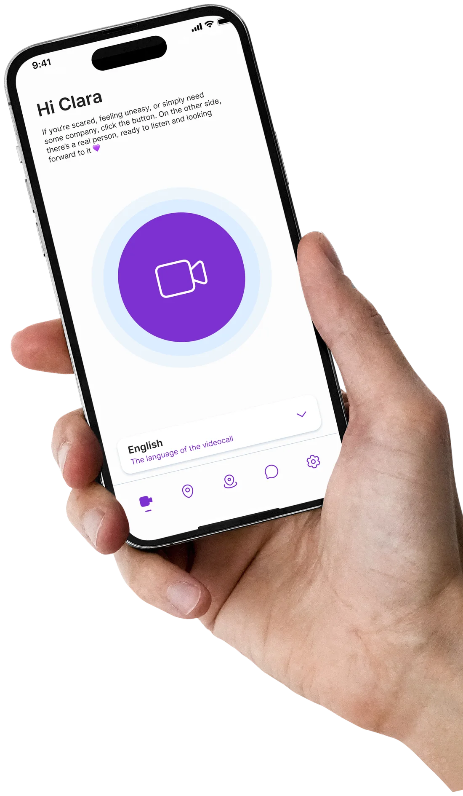

The app that walks you home when no one else can.
As Lead Product Designer, I shaped the end-to-end experience of Viola Walk Home — a mobile app that turns daily commutes into moments of company through real human operators, live video calls, and a network of trusted spaces. The goal: make personal safety part of everyday life, not just an emergency tool.

Walking alone shouldn't feel like a risk.
In Italy, fear of walking alone isn't an exception, it's a daily constant for millions of people.
The data on gender-based violence and perceived safety in public spaces shows a problem that everyday products and services have largely ignored.
- 31.5%
- of people aged 16–70 in Italy have experienced physical or sexual violence in their lifetime (ISTAT)
- 20.2%
- have experienced physical violence
- 21%
- have experienced sexual violence
Three principles that shaped every screen
- Invisible until needed. The app must go unnoticed on the phone — neutral icon, generic name, screens that never look like an SOS.
- Three taps at most. Every critical flow — alert, call, silent message — completable in three interactions, even in the dark.
- Reassuring, not alarming. Warm palette, soft typography, gentle microcopy. The design doesn't increase anxiety — it reduces it.
From research to a working interface
The work started with 14 interviews with operators from anti-violence centres and 6 with potential users, under NDA and psychological supervision.
They produced 3 primary user flows, 8 system states and a 42-component design system — the backbone that kept the experience consistent as it scaled across platforms.
What changed
VIOLA was adopted in 7 Italian cities during the pilot programme. The design system is now the foundation for other products across the organisation, ensuring continuity and development speed.
The project continues with new iterations focused on accessibility and localisation — extending a service that, quite literally, can save lives.
Project numbers
- 7
- cities in the pilot programme
- 42
- design-system components
- 20
- research interviews conducted
- 3
- primary user flows defined
- 98%
- usability task success rate
- 3×
- faster help activation